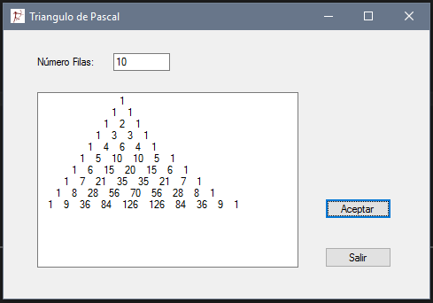

Triangulo de Pascal
Introduction
El triángulo de Pascal es un triángulo de números enteros, infinito y simétrico Se empieza con un 1 en la primera fila, y en las filas siguientes se van colocando números de forma que cada uno de ellos sea la suma
de los dos números que tiene encima. Se supone que los lugares fuera del triángulo contienen ceros, de forma que los bordes del triángulo están formados por unos.
El Triángulo de Pascal o Tartaglia tiene un origen, como en muchos otros casos, muy anterior al de estos dos matemáticos . Se tienen referencias que datan del siglo XII en China. De hecho, algunas de sus propiedades ya fueron estudiadas
por el matemático chino Yang Hui (siglo XIII), así como el poeta persa Omar Khayyam (siglo XII).
El que se le asocie el nombre del filósofo, matemático Pascal (1623-1662) se debe a que el francés escribió el primer tratado sobre el triángulo. Lo de Tartaglia (1500-1557) viene porque el italiano fue de los primeros
que lo publicaron en Europa.
Cada número es la suma de los dos números que tiene encima, menos los extremos, que son siempre "1".
Building the Sample

Description

using System; using System.Collections.Generic; using System.ComponentModel; using System.Data; using System.Drawing; using System.Linq; using System.Text; using System.Threading.Tasks; using System.Windows.Forms; namespace TrianguloPascal_III { public partial class Form1 : Form { public Form1() { InitializeComponent(); } private void button2_Click(object sender, EventArgs e) { Application.Exit(); } //Variables int numero; private void button1_Click(object sender, EventArgs e) { for (int y = 0; y < numero; y++) { int c = 1; for (int q = 0; q < numero - y; q++) { textBox2.Text += " "; } for (int x = 0; x <= y; x++) { textBox2.AppendText(c.ToString()); textBox2.Text += " " + "\n"; c = c * (y - x) / (x + 1); } textBox2.Text += " \r\n"; } } private void textBox1_TextChanged(object sender, EventArgs e) { numero = int.Parse(textBox1.Text); } } }
using System; using System.Collections.Generic; using System.ComponentModel; using System.Data; using System.Drawing; using System.Linq; using System.Text; using System.Threading.Tasks; using System.Windows.Forms; namespace TrianguloPascal_III { public partial class Form1 : Form { public Form1() { InitializeComponent(); } private void button2_Click(object sender, EventArgs e) { Application.Exit(); } //Variables int numero; private void button1_Click(object sender, EventArgs e) { for (int y = 0; y < numero; y++) { int c = 1; for (int q = 0; q < numero - y; q++) { textBox2.Text += " "; } for (int x = 0; x <= y; x++) { textBox2.AppendText(c.ToString()); textBox2.Text += " " + "\n"; c = c * (y - x) / (x + 1); } textBox2.Text += " \r\n"; } } private void textBox1_TextChanged(object sender, EventArgs e) { numero = int.Parse(textBox1.Text); } } }
Source Code Files
- source code file name #1 - summary for this source code file.
- source code file name #2 - summary for this source code file.
More Information
For more information on X, see ...?